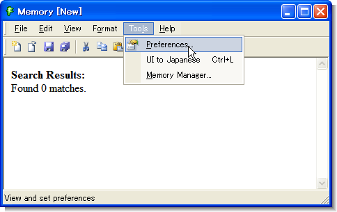
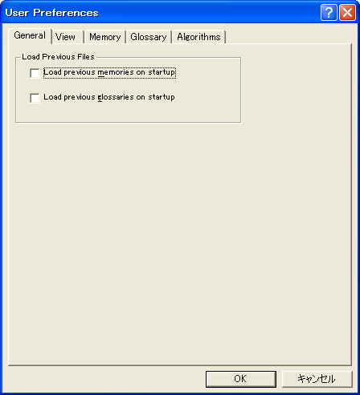
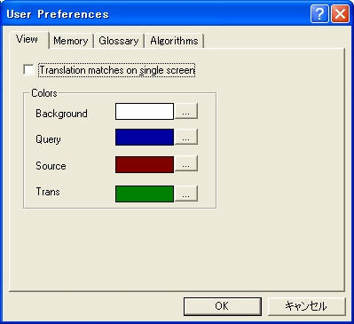
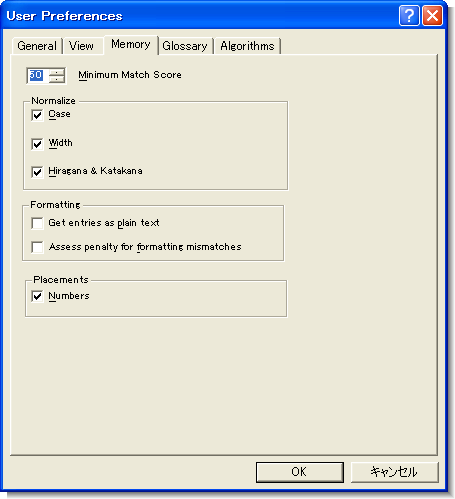
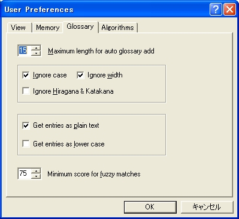
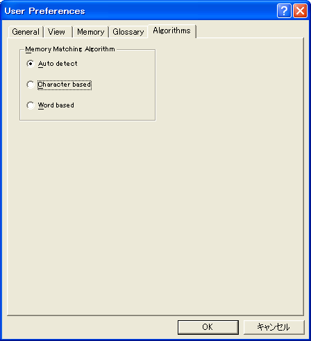

You can configure the behavior of Felix in a number of ways. Preferences are saved across sessions; if you quit Felix and start it up again, the preferences from your last session will be set.
To set the user preferences, from the Tools menu, select Preferences.

The User Preferences dialog appears. There are four property pages:

Load previous files
| Translation matches on single screen | Show all translation matches on a single screen, much like how glossary search results are displayed. | |
| Background color | Set the background color for the Memory window display area. This is useful when you are translating white or other light-color text, or to suit your own preferences. | |
| Query color | Set the query text color in the match view. This is useful for telling the query, source and translation apart at a glance. | |
| Source color | Set the source text color in the match view. This is useful for telling the query, source and translation apart at a glance. | |
| Trans color | Set the translation text color in the match view. This is useful for telling the query, source and translation apart at a glance. | |

| Minimum Match Score | The minimum score to use for matches. | |
| Ignore case | Ignore case when calculating the scores for translation matches. | |
| Ignore width | Ignore full\half width distinctions when calculating the scores for translation matches. | |
| Ignore Hiragana & Katakana | Ignore case when calculating the scores for translation matches. | |
| Get entries as plain text | Retrieve translations as plain text, without any formatting information. | |
| Assess penalty for formatting mismatches | Subtract a small penalty (usually about 1 to 5%) from the match score if the text formatting (bold, italic, etc.) of the query and entry source segment do not match. | |
| Placements (Numbers) | Automatically replace numbers in the translation. For example, if you already have an entry in your memory that says "5 de Mayo" is translated as "May 5," then if you later get a source segment "10 de Mayo," Felix will suggest "May 10" as the translation, even though you don't have that entry in your memory. Numbers "placed" in this way are shown in blue in the match window. | |

| Maximum length for auto glossary add | When you register an entry in the memory, if the Source field is this number of characters or fewer, it is automatically added to the glossary as well. Set to 0 to disable auto glossary registration. | |
| Ignore case | Ignore case when calculating the scores for glossary matches. | |
| Ignore width | Ignore full\half width distinctions when calculating the scores for glossary matches. | |
| Ignore Hiragana & Katakana | Ignore case when calculating the scores for glossary matches. | |
| Get entries as plain text | Retrieve glossary translations as plain text, without any formatting information. | |
| Get entries as lower case | Retrieve glossary translations as all lower case. For instance, if the translation in the glossary is "File," it will be retrieved as "file." | |
| Minimum score for fuzzy matches | Use this feature to enable fuzzy matching for glossary searches. Set to a score between 0 and 100. Set the score to 100 to disable fuzzy matching. | |

Memory Matching Algorithm| Auto detect: | Felix automatically detects the matching algorithm (Default). |
|---|---|
| Character-based: | Matching is based on individual characters. This algorithm is best suited to languages like Japanese, in which individual words are not separated by spaces. |
| Word-based: | Matching is based on words. This algorithm may be better suited to European and other languages where words are separated by commas. |
When you are finished making your settings, click OK.
Back (Open a New Glossary Window) | Next (Manage Your Memories)